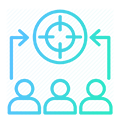

-
Organization Succumbs to...
 Workforce Engagement Problem 79%?
Workforce Engagement Problem 79%?
-
Organization Success
is not by Chance
Human Capital
is the Pivotal
-
Empower your Organization with Transform HCMS
HR FOUNDATION
HR Foundation forms the basis of HCMS. It offers intuitive self-service capabilities that help maintain the entire Organization hierarchy and Employee Database. In addition, it facilitates the generation of customized reports that ensure increased effectiveness and efficiency.

Organization
Every Organization has its own unique hierarchy and structure. Our system is developed to cater to different organizational structures and its hierarchy can be defined and tailored according to the needs of each organization. It is a completely customizable solution that can be tailor-made to meet specific requirements.
Employee
HCMS enables managing and maintaining a comprehensive employee database. It serves as a secure repository for all the details of the employees such as Basic Information, Personal Information, Educational Details, Professional Information, Certification Details, and Skill sets. Also, with the reporting manager being mapped for each employee, the reporting hierarchy is automatically generated and is available for general purview and understanding.
Reports
Reports are a crucial part of any organization. They are very important for critical analysis, effective planning, and decision making. Our reports module in HR Foundation enables the generation of customized reports of employees and the organization. With handy filter options available, reports can be generated by users based on their specific needs by applying necessary filters. Reports can be exported in various formats like PDF, Excel or CSV. Also, they can be directly printed as well.
HR Foundation enables setting up the basic foundation for every organization – Defining & Setting up the Organization Structure, Secure Employee Data Entry & Maintenance, and Customized Report Generation.
WORKFORCE ADMINISTRATION
Workforce Administration is designed to efficiently manage and execute day to day organizational events such as work time/shift setup & mapping, attendance tracking & monitoring and asset management. Enabling a wide range of compliance definition for an administrative workforce goes a long way in ensuring an organization’s processes are in place and NEXT HCMS provides a unique solution that enables compliance tracking with reviews.
Workforce Time Management
In today’s competitive world, organizations no longer stick to just traditional general shifts. Based on customer or market needs, flexible shifts and schedules are planned and executed, thereby ensuring availability at all times. Be it a single shift or multiple shifts, NEXT HCMS provides best in class work time management system that facilitates setting up of work time, mapping employees to respective shifts and tracking accordingly.
Attendance Configuration and Management
NEXT HCMS enables efficient tracking of employee attendance by creating and managing customized attendance policies in accordance with the norms of each organization. For example the grace time for late sign in or early departure, number of permission requests per month etc., vary across organizations and our system facilitates tailor and made setup that is compliant with the respective organizational policies.
NEXT HCMS has been developed with provisions for third and party integrations and if there is any external attendance tracking system being used currently, it can be seamlessly integrated with HCMS. This in turn guarantees subsequent tracking and report generation at a single place. In addition, if attendance needs to marked manually, that can also be done through the Manual Attendance feature. Using this option, the Clock in and Clock Out time of each employee can be updated manually.
Asset Management
Asset Management and Tracking is a vital process for every organization. NEXT HCMS Asset Management System offers impeccable Asset Addition, Allotment, Tracking, and Maintenance. This works in tandem with HR Foundation and Exit Management thereby ensuring flawless asset mapping and handover throughout an employee’s journey.
Features
- Workforce Time Management
- Attendance Configuration
- Asset Management
Workforce Administration Demo
LEAVE MANAGEMENT
To drive businesses forward, Leave Management serves as a key function. NEXT HCMS Leave Management System is a distinctive solution that warrants organizations to function at optimum levels even in case of employee absences. Through a wholesome systemized process, it not only saves time and cost but also helps manage the workforce with ease without much manual intervention. The types of leaves provided for employees vary from organization to organization and in NEXT HCMS the leave types can be customized according to the respective organization/s.
Holiday and Leave Administration
Holiday and Leave Administration enables the Holiday Calendar Setup and Leave Balance Configuration based on each organization policy. For each year, the Holiday Calendar can be defined and set up across all organizations. The Holidays declared could vary within the organization based on their operating locations. Such declarations enable employees to be prepared in advance, so that, they can plan their work and their vacations as well. Similarly, the Leave Balance updates such as Leave Credits, Carry forward from previous years etc., can also be updated through this system. Once the Holiday and Leave Administration setup is done, the systemized process takes over and employees can view updates at their own leisure as and when needed.
Holiday/Leave Calendar
Holiday/Leave Calendar provides a holistic view of the declared holidays for a year and the leaves taken. This is an intuitive calendar designed with the best User Experience and Interface and it provides an overview of the leaves availed, their type, the balance of each leave type and the holidays declared.
Leave Request Management
Gone are the times when leave requests were sent through emails and approvals/confirmations were awaited. Herein, the employee can select the type of leave to be availed, enter the reasons, date and submit the request. Automatic email notifications are sent to reporting officers for processing. Once the leave request is processed, its status is also intimated immediately through notifications. Based on the leaves availed, their balance is also auto updated. This systemized process enables efficient tracking, report generation, and seamless payroll calculation too.
COMPENSATION MANAGEMENT
Compensation Management enables administering employee salaries in an organization. In simple terms, Compensation can be termed as the rewards reaped by the employees in return for their work.
NEXT HCMS Compensation Management is defined in such a way that it not only attracts new employees but it also ensures retaining existing employees.
Seamless integration with other modules like HR Foundation, Workforce Administration, Leave Management, Performance, and Exit Management ensures flawless and impeccable Payroll calculation and disbursement.
Performance driven returns, individual benefits management, and customized salary structure definition make NEXT HCMS unique amidst its competitors.
Payroll Report Generation
Once the configuration is done, the Payroll report can be run every month/periodically without any hassles. Since this module is fully integrated with the rest of the HCMS modules like Leave Management, Attendance Tracking, Performance Management etc., there is no need for manual intervention to track absences, performance incentives for payroll computation. The Payroll report can be generated organization wise and it provides a comprehensive overview of the earnings, deductions and a net salary of each employee in the organization.
Payroll System Setup
Payroll System can be configured according to the policies and procedures followed in each organization. It begins with the Configuration Setup wherein the Contributions, Deductions, Salary Rules, Salary Structure can be applied.
NEXT HCMS is an open and completely customizable system. Each component that forms a part of Salary structure can be defined and formulated as per the applicable rules and regulations. For example, the Contributions applicable to the organization like Provident Fund, ESI, Gratuity etc., can be added, Payment Advice which outlines the mode of payment can be defined, Other components such as Basic Pay, Travel Allowance, Dearness Allowance etc., can be setup as rules.
Salary rules are used to compute the Salary Components like Earnings and Deduction. These rules serve as the prerequisite to define the salary structure. Salary structures can be configured by mapping the relevant set of rules and when a new employee is on board, Salary contract can be defined by mapping the applicable Salary Structure and the respective salary of that employee.Tax Declaration Management
Tax Declaration Forms are available for every employee to submit their declarations for each financial year. Based on the Tax Declaration Form submitted, the Tax Deduction at Source is taken care of by the system and it is subsequently updated in organizational Payroll report. Tax Declaration form is provided in a configurable format for the Finance Team and new rules can be approved and updated by them. This ensures up to date form availability to employees at all times.
Payslip Generation
Payslips are given to an employee at the end of the week or month (depending on the payroll cycle) outlining how much money has been earned or how much tax or insurance has been deducted. This system facilitates automatic generation of payslips as and when needed. Each employee can use the My Payslip option to generate his/her payslip by just selecting the relevant period.
TALENT MANAGEMENT
Talent Management enables managing, developing, aligning, and rewarding employees. An organization with super talented employees always produce better products or services compared to the ones that have employees with average talent.
NEXT HCMS enables organizations to gain insight into their talent landscape, align top talent with key business objectives, and develop tomorrow’s leaders. These result in structured talent management which ensures increased productivity and employee engagement, improved time-to- competence, higher retention and career empowerment.
Managing the Talent Inventory, Efficient Talent Profiling and Talent Matrix portrayal the keys to effective Talent Management and NEXT HCMS warrants these with absolute certainty.Talent Inventory
Talent Inventory is a strategic step planned with the futuristic purpose in mind and it involves building a pipeline of the talent needed to fulfill the organizational goals and objectives. Role Definition is a crucial process in maintaining the Talent Inventory and NEXT HCMS offers an elaborate role definition process that goes a long way in setting up the platform on which the entire organization operates. It involves defining the roles needed in the organization, the number of resources in each role, the educational qualification for that role, the competencies needed, the critical success factors, key performance objectives, the key result areas as well and many more.
In addition, the role of the reporting authority is also mapped during this stage. The Organization Reporting structure is automatically arrived based on this. Such a clear role definition helps employees to know exactly what is expected of them and enables them to carry out their day-to-day responsibilities. Research has shown collaboration improves when the roles of individual team members are clearly defined and well understood. NEXT HCMS encompasses this with the objective that when individuals understand their role and how it is bounded in ways, it allows them to do a significant portion of their work independently.Talent Profiling
Talent Profiling helps management team understand what the talent pools look like, how it fares up to achieve organizational objectives and assist in critical decision making. NEXT HCMS Talent Profiling provides a complete outlook of a talent’s employment history, professional achievements, competencies, rewards, and their performance standings. This also helps employees realize that their careers are being adequately developed, and they are best-trained based on their skill set. NEXT HCMS Talent profiling paves the way to smoothly develop employees for advancement and choose the right skilled resources for projects.
Competency Assessment
For every role, three types of competencies applicable for that role are defined during role definition – Technical Competencies, Functional Competencies, and Behavioural Competencies. The list of applicable competencies under each type is mapped for each role along with the level of knowledge needed in that competency i.e Basic, Intermediate and Advanced. These competencies are assessed for each employee periodically enabling bench strength understanding and facilitates for organization improvement.
Talent Matrix
NEXT HCMS enables competency assessment and performance assessment in regular intervals(Quarterly, Bi-Yearly or Yearly). Based on both the assessment scores, the Talent Matrix arrives which is a 9 grid table view of all the employees and their standings. Each grid has as a separate indication such as Performer, Contributor, Expert, Rising performer, etc., and based on the assessment, employees are grouped into respective grids. This provides a bird’s eye view of talent standings and performance improvements & training can be planned accordingly.
Accolades Management
Rewards and Recognitions are essential for a motivating and outstanding workplace. NEXT HCMS enables alignment of talent management strategy with performance management and accolades management thereby leading to organizational success. Periodical accolades creation, tracking and communication can be effectively managed through this module.
Benefits
- Better positioning of resources
- Improved operational efficiency
- Enriched people performance
- Decreased risk
- Increased line-of-sight over people and performance
- Enhanced Productivity
Talent Management Demo
WORKFORCE PLANNING
Workforce planning is getting the right number of people with the right skills employed in the right place at the right time to meet an organization’s short- and long-term objectives. Workforce Planning is to be viewed as a vital part of the strategic business planning process and should be linked to strategic goals. NEXT HCMS Workforce Planning is a comprehensive system that imparts three types of Workforce Planning and Analysis namely Strategy Analysis, Structure Analysis, and Job Requisition Analysis thereby ensuring a sound system strategically and operationally.
Strategy Analysis
Strategic Workforce Planning is essentially aligning the human capital needs with those dictated by the business plan and strategy. NEXT HCMS involves defining the organizational strategy wherein we use the STEEPLE method of analysis. Based on the methodically defined strategy, the system analyses the current workforce profile and the gaps & generates summarized reports. These reports serve as a base for planning and maintaining the workforce. Also, cost view reports are generated to provide a financial overlay as well.
Structure Analysis
By structure, we mean the framework around which the organization is devised, the underpinnings which keep the coalition functioning. It's the basic charter that indicates how the organization is put together and how it works. Herein, workforce planning is done based on the planned organization structure. This planned structure is auto-derived based on the role definition setup under Talent Management. The system compares the planned organizational structure with the existing organizational structure and provides a structured overlay of the planned workforce count, existing count and highlights the gaps. This, in turn, facilitates in generating summarized reports and cost view reports based on which structural workforce planning is done.
Job Requisition Analysis
System Analysis is the process of studying a procedure or business in order to identify its goals and purposes and create systems and procedures that will achieve them in an efficient way. Job Requisition Analysis is a form of system analysis and NEXT HCMS offers an intuitive methodology to analyze requisitions. Job Requisitions requests can be raised by Department Heads or Team Leads or Managers if a new position is created within the team or if an existing position is vacant. These requests are then processed by HCM Team and mobilized for Talent Acquisition. Workforce planning is integrated with other modules like Talent Acquisition, Talent Management, etc., and ensures unified functioning throughout
TALENT ACQUISITION
Talent acquisition is the process of finding and acquiring skilled employee for organizational needs. The goal of Talent Acquisition goes beyond filling open positions; it’s about taking a long-term strategic view for filling future positions as well. It is a meticulous approach to attracting, sourcing, recruiting, assessing, hiring and onboarding the best talent to meet business objectives. NEXT HCMS provides a proactive approach to Strategic Talent Acquisition and in a long term view, it leads to competitive advantage, lower hiring costs and improved quality of hire.
Job Openings Management
Job Openings Management does not signify filling open positions alone; NEXT HCMS Talent Acquisition focuses more on building a relationship with top talent in the industry than about simply recruiting for current job opportunities. Talent Acquisition module works in tandem with Workforce Planning and Job openings are created once the analysis reports and approvals are received from Workforce Planning module. Enriched with Social Media Integration, Website Integration, Job Boards Integration and tracking reports, NEXT HCMS has made Job Openings management easier like never before.
Candidate Tracking System
Candidate Tracking System encompasses overseeing, building and maintaining relationships with candidates. It is more about collecting relevant data and keeping in touch with candidates until the right positions open up. In NEXT HCMS, the skills and competencies defined for each role are analyzed with the candidate’s skills and a profile match percentage is automatically arrived. It is a best in class solution as it goes one step ahead and analyses the potential hire’s fit with the company's culture along with how well they are going to perform the job they're hired for. With stage by stage tracking and automatic conversion of the candidate to the employee once on-boarded, NECT HCMS provides a ubiquitous Candidate Tracking System that is effective and efficient.
Interview Management
Interview management is all about scheduling and tracking interviews and facilitates subsequent hiring. NEXT HCMS Interview Management System ensures impeccable scheduling of interviews through an intuitive calendaring feature that highlights schedule overlaps, provides advance notifications and ensures planning with ease. It also assists in setting up the interview panel and capturing ratings, feedback and clearance status at each stage of the interview.
Offer Management
Once a candidate is selected, NEXT HCMS Offer Management takes care of Offer Release, Negotiation, and Revisal. Based on the available candidate information and the agreed payroll, the Offer Letter is automatically generated from the system. In addition, through the email option, the Offer Letter can be immediately sent via email as well. The further processes like negotiation, offer revision are systematically tracked and the status of the offer like Offers Made, Accepted, Declined and Withdrawn are also maintained for reporting purposes.
On Boarding
NEXT HCMS Onboarding process is the act of transferring new-hire information from a Candidate Tracking System into an On boarding system. We provide a proactive system wherein absolute impetus is provided for the four distinct levels of On Boarding-Compliance, Culture, Clarification, and Connection. Compliance includes verifying all legal and policy-related rules and regulations eg: Document Verification, Background Verification, Asset Allotment, etc., Culture is a broad category that includes providing employees with a sense of organizational norms through Company policy overview. Clarification refers to ensuring that employees understand their new jobs and all related expectations eg: Roles and responsibilities overview, Knowledge transfer, etc., And final Connection refers to the vital interpersonal relationships and information networks that new employees must establish eg: Team Introduction, Project Orientation, etc.,
Benefits:
- Increase talent acquisition productivity
- Enhanced talent acquisition and hiring compliance
- Ensure access to a more qualified candidate pool
- Utilize recruitment metrics to drive better results
- Increase quantity of quality candidates
- Reduce administrative time spent on recruiting
- Improved candidate mining and management
- Enriched pre-employment activity
Talent Acquisition Demo
PERFORMANCE MANAGEMENT
Performance Management facilitates achieving organizational goals & objectives through creating a work environment in which people are able to perform to the best of their abilities. Effective performance management ensures workforce alignment, competency improvement and enhanced employee performance thereby delivering better business results. In NEXT HCMS, measures like Balanced Score Card and Objectives & Key Results ensure the processes are unique, wholesome & tailored to the collective needs of the Employees and the Organization.
- Under Performance Management, the following options are available -
- Balanced Score Card
- Cascading Objectives
- Objectives & Key Results
- Performance Assessment

Balance Score Card (BSC)
Balance Score Card is a strategic management technique used to identify and improve key functional areas of a business. NEXT HCMS provides a strategic and qualitative performance management approach in which the overall objectives are defined on the basis of four perspectives - Financial, Customer, Learning & Growth and Process. The objectives can be defined periodically (Monthly/Quarterly/Bi-Yearly/Yearly) and their progress percentage is auto updated based on results achieved.
Objective and Key Result (OKRs)
OKR is a goal management system for defining objectives, tracking their progress and outcomes. As its name implies, it comprises of an objective which is a clearly defined goal and one or more key results which are the measures to achieve that. In NEXT HCMS, OKRs work in sync with the Balanced Score Card. It follows a top- down approach wherein the objectives defined at the organization level are drilled down and mapped to a team and individual level. Such intricate detailing ensures that when objectives or goals are achieved at each level, the overall progress achievement at the organizational level (in BSC) automatically arrives.
Performance Assessment
Performance Assessment and Review is one of the effective measures in achieving business targets through continuous employee monitoring, nurturing and training. NEXT HCMS is embedded with 360-degree performance assessment wherein employees are rated by themselves, their peers, subordinates, and managers. The feedback and rating provided by each review group help an employee to understand what is expected and what has been achieved, gain knowledge on perspectives from different levels and work towards improvement. Herein, the assessment form can be set up based on the key results mapped in role definition as well in the OKRs. Once the weight setup is done and the review group is mapped, the assessment schedule can also be configured. Automatic notifications ensure the assessment is conducted at all levels as per the schedule and a consolidated report is generated at the end of 360-degree review and assessment. If training is recommended for an employee, it is automatically mapped to Learning& Development module and taken forward from there.
SUCCESSION PLANNING
Succession planning focuses on identifying, nurturing and developing talent to take on increasingly greater responsibility and leadership in the organization. While the organization can perform the succession planning for all resources, it is critical to identify the key roles and resources belonging to that role and have the succession plans developed. NEXT Succession planning is more methodical and it provides a visual comparison of the incumbent for the proposed role competencies.
Identifying Key Roles
Identifying key roles is one of the most crucial steps in succession planning for any organization. Every organization needs to be aware of the roles and people in that role that play an important part in the successful running of their business on a day to day basis. NEXT HCMS provides a user-friendly solution that makes sure critical roles are identified at ease. This, in turn, assists in developing action plans to address succession planning needs and ensures a pipeline of talent is available to execute the organizational strategies and goals.
Potential Successors Identification
Once the key roles are identified, NEXT HCMS provides a view of the successor hierarchy for each one of them. The Potential Successors are identified and this is arrived based on the competencies defined for that role, the competencies possessed by the incumbent person in that role and competencies possessed by the potential successors. A percentage of profile match is arrived based on the assessed competencies (eg: 60%, 70% match, etc.,) and this gives an overview of what areas the potential aspirants are to be trained on.
Succession Planning Talent Profiling
After key roles are determined and potential successors are identified, it is necessary to profile the talent and empower them for future responsibilities. In NEXT HCMS Succession Planning, profiling is done through identifying the career aspirations, determining the flight risk, arriving on retention plan, analyzing the readiness for promotions to the next level periodically and more. This facilitates successful profile building and ensures that the organization is fully prepared for any eventuality.
Reassignment Management
Reassignment processes such as Transfer, Promotion, and Demotion happen frequently across all organizations. NEXT HCMS is enriched with a simple solution wherein the Transfer, Promotion or Demotion requests can be raised by designated authorities; and based on the inbuilt process of approval or rejection, it can be systematically processed and facilitated.
Succession planning is the process for identifying, nurturing and developing people to take on progressively greater responsibility and leadership in the organization. While the organization can perform the succession planning for all resources, it is critical to identify the key roles and resources belonging to that role to have the succession plans developed.
LEARNING & DEVELOPMENT
Learning & Development is primarily focused on empowering the workforce through an enhanced learning process. NEXT HCMS Learning & Development aligns learning activities with competency gaps thereby arming the workforce for current and future needs. It facilitates analyzing the skill gaps, identifying techniques to bridge the gaps and enables continuous monitoring of improvements.
Training Creation and Management
NEXT HCMS Training Management encompasses the creation and tracking of training. It is not only about training creation but also includes schedule management, trainee enrolment, feedback survey and publishing of results. In addition, training materials can also be uploaded so that it is available for access to all trainees. This module is user-friendly and compatible across different types of training categories and methodologies.
Training Request and Processing
Herein, employees have an option to raise a request for training in a particular topic or field. NEXT HCMS being a comprehensive empowerment system provides an overall outlook and accomplishment of employees at each level and this helps every individual understand where they stand and what areas are to be improved. This self-request are then routed for approval as per the reporting hierarchy and converted to training after further processing.
Training Recommendation
Training Recommendation is a unique area wherein Training are planned based on the feedback and observations received across. Recommendations can come from Management for organizational level training for overall improvement or it can be from Team Leads or Managers for Team or individual enhancement. These recommendations are processed and converted to training in this section.
Training Cost and Budgeting
Training/Certifications that involve costs are submitted for approvals first and processed further only after concurrence is received. NEXT HCMS provides an option to raise cost and budgeting requests for external trainer led training or other paid ones. Based on the approval authority mapped in the organization structure, the requests are routed for approval and taken forward.
EXIT MANAGEMENT
Employee exits are a natural part of an organization cycle and employee exit management describes the consciously designed separation process when an employee leaves the company. Whether caused by voluntary resignation, retirement or company induced termination, employee separations are to be effectively managed by every organization.
- NEXT HCMS helps to execute separation process smoothly without the separating employee feeling harassed
- Initiation of the process, smooth transitions, the return of company property with proper clearance from all concerning department is ensured
- Valuable insights about the organization from departing employee are received through exit interviews that help the organization reduce future attrition.
Exit Request management
NEXT HCMS is imbibed with a smooth exit management system wherein exit requests can be raised and processed in a systematic manner. Employees can raise the exit request by selecting or entering the appropriate reason and the requests are then subjected to further levels of approval based on organization hierarchy. Approval or Rejection can be done at all levels and the revoking option is also available for employees. Once the requests are approved, clearances from all the departments can be tracked and monitored here for completion of exit formalities
Exit Certificate generation
Once the exit formalities are completed and the clearance is received from all departments, the Exit Letter or Certificate can be generated directly from NEXT HCMS. The Template applicable to respective organizations can be pre-loaded into the system and the letters can be generated in the standardized format once the formalities are fulfilled.
Exit Report Management
Like other modules in NEXT HCMS, Exit Management too is embedded with the option to generate intuitive reports. Customized Reports of Raised Requests, Approved and Rejected requests, Clearance Levels can be generated as and when needed. Varied filter options are also available so that the reports can be generated Organization wise, Team-wise, Period wise and more.
APP ADMIN
NEXT HCMS provides a ready to use solution that can be customized easily and launched with minimal turnaround time across organizations irrespective of their size. The following configurations that are crucial for a system setup can be done at a single place with minimal fuss – User Activation, Access Control Setup and Mapping, Alert Message Configuration, Customizable dropdown options and many more. Complete Master data setup and bulk data upload can be handled here.
User Management
User Management is a critical part of every system, NEXT HCMS has implemented a security solution that can be used with ease. Herein, the following activities are handled – User Registration, User Activation, and Deactivation, User Group Creation, Mapping roles to groups and User Management.
Access Control
Using Access Control, the menu and page-level access can be defined and set up for different user groups. The read, edit, add and delete access can be set up for each user group and the same would be applied to all the roles mapped under that group.
Master Data Configuration
The complete data setup can be handled using Master Data Configuration. Bulk data upload provision is available so that initial data setup can be handled easily. In addition, we do have to manage reference items feature through which alert messages, notifications, and dropdown options can be updated and it would be applied across the system. For example, if we have a dropdown field say Job Type, we can set up the values that are to be displayed in that option such as Permanent, Temporary or Contractual using this feature. NEXT HCMS aims at providing a thoroughly customizable system and App Admin is no exception. It ensures ease of navigation, user-friendly interface and flexible platform set up.


 HR Foundation
HR Foundation
 Leave
Leave  Compensation
Compensation  Succession
Succession  Learning &
Learning &  Exit
Exit  App Admin
App Admin

{kind=link}
{kind=link}
{kind=link}
{kind=link}
{kind=link}
{kind=link}
{kind=link}
{kind=link}
{kind=link}
{kind=link}
{kind=link}
{kind=link}